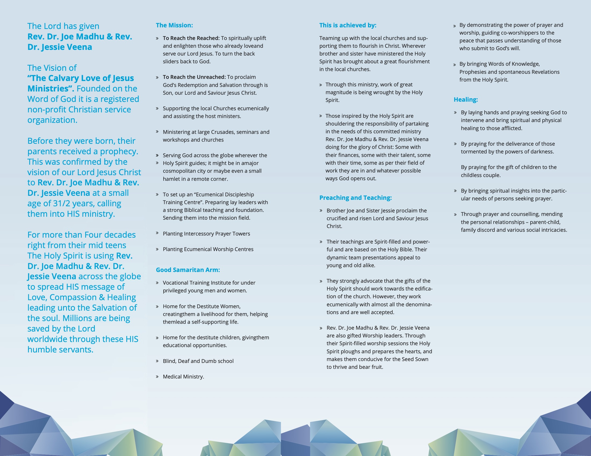
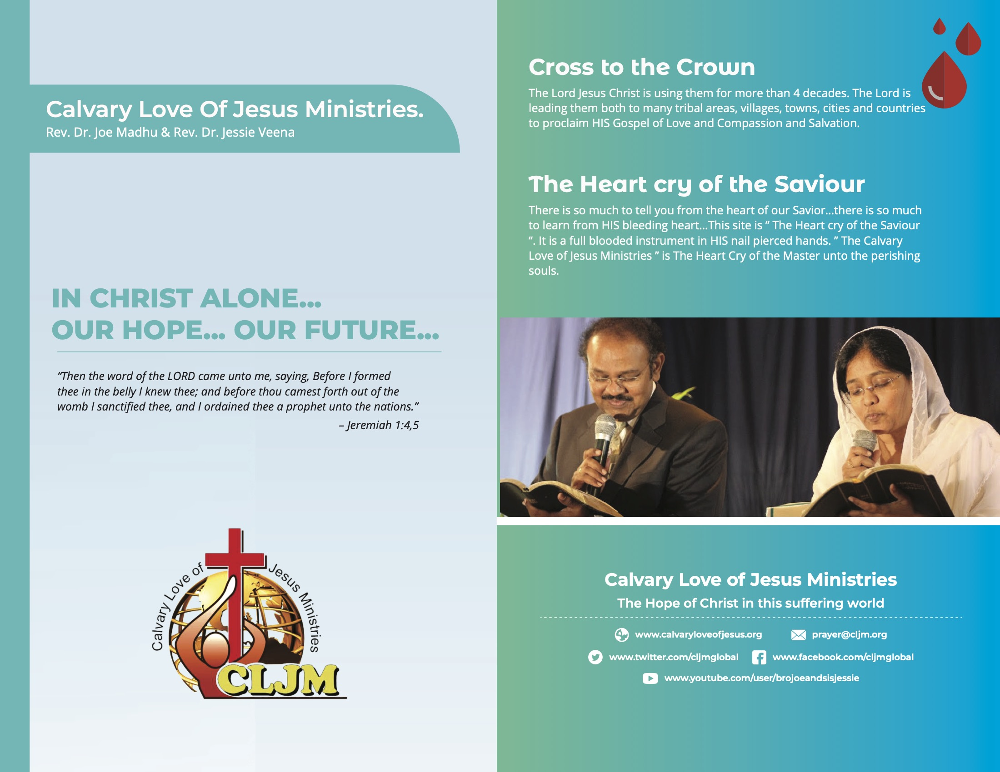

Speaker Introduction
The Lord has given Rev. Dr. Joe Madhu & Rev. Dr. Jessie Veena the Vision of “The
Calvary Love of Jesus Ministries”. Founded on the Word of God it is a registered
non-profit Christian service organization. Before they were born, their parents
received a prophecy. This was confirmed by the vision of our Lord Jesus Christ to
Rev. Dr. Joe Madhu & Rev. Dr. Jessie Veena at a small age of 3 years and 6
months, calling them into HIS ministry. For more than Four decades right from
their mid-teens, The Holy Spirit is using Rev. Dr. Joe Madhu & Rev. Dr. Jessie Veena
across the globe to spread HIS message of Love, Compassion & Healing leading
unto the Salvation of the soul. Millions are being saved by the Lord worldwide
through these humble and anointed servants.

